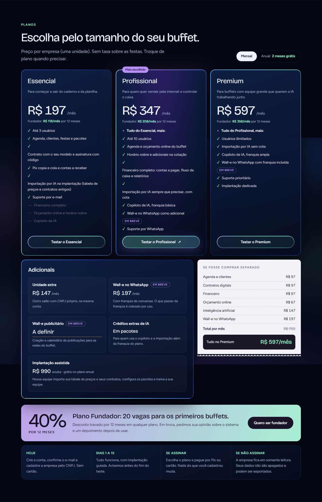
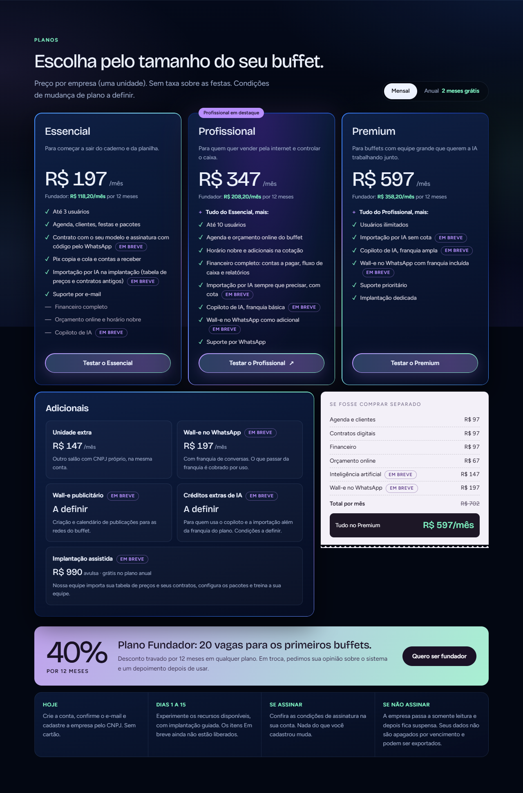

Esquerda: HTML aprovado. Direita: build local. Capturas no mesmo viewport. A referência inclui a faixa de revisão removida na implementação. Animações capturadas em instantes diferentes.


As diferenças e pendências estão em SITE_VENDA_20261008.md. Esta comparação é um arquivo local de revisão, não uma publicação.